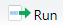

3. Programa RStudio
Šis skyrius skirtas susipažinti su programa „RStudio“. Jame nagrinėsime organizacinius ir pagalbinius duomenų analizės bei darbo programa „R“ aspektus. Išsamesnei pažinčiai su programos „R“ kodu bus skirtos kitos temos.
Tikslas – įgyti darbo programa „RStudio“ pradmenis.
Jūsų užduotys skaitant šį skyrių:
- Sužinoti ir mokėti paaiškinti, kas yra „RStudio“ ir kuo skiriasi nuo „R“;
- Išmokti atsidaryti programą „RStudio“;
- Sužinoti ir mokėti apibūdinti pagrindinių „RStudio“ langų paskirtį;
- Išmokti kompiuteriui pateikti komandas naudojantis „R“ komandų langu;
- Išmokti kompiuteriui pateikti komandas naudojantis „R“ redaktoriaus langu;
- Sužinoti, kas yra „R“ paketas ir naudojantis „RStudio“ išmokti parsisiųsti ir užsikrauti paketą;
- Išmokti informaciją apie „R“ komandą susirasti pagalbos ir dokumentacijos („Help“) lange;
- Išmokti susikurti „RStudio“ projektą.
3.1 RStudio
Programa „RStudio“ (pav 3.1) yra patogesniam darbui su „R“ skirta aplinka (integruota kūrimo aplinka, angl. IDE – integrated development environment). Jei imtume automobilį kaip atitikmenį, tai jo variklis būtų „R“, o mašinos salonas – vairas, pedalai, spidometras, šviesų jungiklis, masažinės sėdynės ir borto kompiuteris – „RStudio“ (pav. 3.2).
| „R“ – variklis | „RStudio“ – patogiam valdymui skirtas salonas |
|---|---|
 |  |
Pav. 3.2: Analogija tarp „R“, „RStudio“ bei automobilio. Iliustracijos šaltinis:
Papildoma. Galite peržiūrėti šiuos du video epizodus (anglų kalba), kuriuose pristatoma programa „RStudio“: „RStudio“ tinklalapyje ir „DataCamp“ tinklalspyje .
Užduotis 3.1
- Atsidarykite programą „RStudio“. Jei programos ikonos nėra darbalaukyje, pasinaudokite savo operacinės sistemos programų paieškos sistema.
3.2 RStudio langų išdėstymas
Standartinis programos „RStudio“ langų išdėstymas ir kiti elementai, į kuriuos rekomenduojama atkreipti dėmesį, pavaizduoti pav. 3.3. Pirmą kartą atsidarę programą galite matyti tik tris langų grupes, o ne keturias, kaip vaizduojama iliustracijoje.
Pav. 3.3: Keturios pagrindinės programos „RStudio“ langų grupės (1-4), langų išdėstymą valdantis meniu (5A, 5B), pagrindinė programos meniu juosta viršuje (6) bei dabartinio projekto pavadinimas (7). Paveiksle vaizduojamas langų išdėstymas šioje svetainėje bus vadinamas standartiniu.
3.3 Komandų langas
Svarbiausias pirmosios langų grupės (pav. 3.3) langas yra komandų langas (pultas, „konsolė“, angl. console). Tai pagrindinis bendravimo su programa langas: čia rašome komandas ir gauname skaitinius arba žodinius atsakymus iš programos „R“. Jei komandų lange dega „>“ ženkliukas (angliškai vadinamas prompt), vadinasi, programa pasirengusi priimti jūsų komandas. Norėdami, kad jos būtų įvykdytos, įrašome programos kodą ir paspaudžiame Enter. Jei komandos vykdymas trunka ilgai, užsidega „Stop“ ženkliukas . Kai jis užgęsta – skaičiavimas baigtas. Jei norime nutraukti skaičiavimą anksčiau laiko, paspaudžiame šį ženkliuką. Jei norime išvalyti komandų langą, spaudžiame ikoną, kurioje vaizduojama šluota arba Ctrl+L.
Jei lange vietoje > dega +, vadinasi, nebaigta vesti komanda. Šiuo atveju yra 2 išeitys: arba įvesti komandą iki galo, arba spausti „Escape“ (Esc) klavišą, kol vėl atsiras > (pav. 3.4).
Pav. 3.4: Vienas iš galimų sprendimų, jei komandų lange vietoje > dega +, yra kelis kartus paspausti Esc. Iliustracijos šaltinis: .
Užduotis 3.2
- Perskaitykite, kas parašyta komandų lange, kai vos tik paleidžiate programą. Kokia tai informacija?
- Išvalykite komandų langą.
- Naudodamiesi komandų langu įvykdykite komandą „trys minus dvidešimt“:
3 - 20. Rezultatas turėtų būti „[1] -17“.
3.4 Redaktoriaus langas
Antrai langų grupei (pav. 3.3) priklauso redaktoriaus langas (angl. source code editor). Šiame lange atidaromi įvairūs tekstiniai dokumentai, kurie naudojami kaip užrašų knygutė programos kodui bei tekstui. Pvz., „R“ programos kodui skirtas „R Script“, o ataskaitoms ar kitokiems dokumentams rengti – „R Markdown“ formatai. Dokumentus galime išsaugoti paspaudę Ctrl+S (rekomenduoju šią kombinaciją spausti reguliariai).
Jei programą atsidarote pirmą kartą, redaktoriaus lango galite ir nematyti. Tokiu atveju paspauskite Ctrl+Shift+N ir atsidarys „R“ programos kodui rašyti (ir išsaugoti) skirtas langas („R Script“). Taip pat galite naudoti pav. 3.5 pateiktas instrukcijas.
Pav. 3.5: Žingsniai, kaip „RStudio“ redaktoriaus lange atsidaryti programos kodui skirtą „R Script“ dokumentą. Numeriais pažymėti punktai rodo vietas, kur reikia spausti pele.
Norėdami įvykdyti redaktoriaus lange parašytas komandas, programos kodą pažymime pele ir spaudžiame mygtuką  („Run“) arba klavišų kombinaciją Ctrl+Enter.
Užduotis 3.3
- Patikrinkite, ar matote visus keturis „RStudio“ langus, vaizduojamus pav. 3.3. Jei kurio nors trūksta, atsidarykite.
- Įsitikinkite, kad programoje „RStudio“ nustatyta UTF-8 koduotė. Jei nepamenate kaip, žiūrėkite skyriuje 1.5.2.
- Redaktoriaus lange padėkite grotelių simbolį
#ir raštu glaustai apibūdinkite, kas yra „R“ ir kas yra „RStudio“? Kuo skiriasi? Kuri iš programų – svarbesnė (kuri be kurios kita neveiktų)? - Redaktoriaus lange naujoje eilutėje (be grotelių) įrašykite
2 + 3, šią išraišką pažymėkite pele ir paspauskite Ctrl+Enter. Kuriame lange atsirado atsakymas „[1] 5“?
3.5 Paketų valdymo langas
Apie šį langą plačiau kalbama skyriuje „5 R paketai“ bei poskyryje „5.2 RStudio langas Packages“.
3.6 Pagalbos langas
Vienas iš centrinių „R“ kodo elementų yra funkcija (žr. skyriuje 4.2.1). Norint rasti kurios nors funkcijos aprašymą ar naudojimo pavyzdžių galime pasinaudoti pagalbos langu „Help“. Šį langą galime atsidaryti tokiais būdais:
- naudodamiesi pele (pav. 3.6),
- redaktoriaus lange pažymėję funkcijos pavadinimą ir paspaudę F1,
- naudodami specializuotas funkcijas, tokias kaip
help(),?,??.
Kaip naudotis langu, paaiškinta pav. 3.6.
Pav. 3.6: Naudojimasis pagalbos ir dokumentacijos langu. Ketvirtoje „RStudio“ langų grupėje (pav. 3.3) atsidarome kortelę „Help“ (1), įvedame dominančios funkcijos pavadinimą (2) ir iš iššokusio sąrašo pasirenkame patikslintą temą (3) arba tiesiog paspaudžiame Enter. Raidėmis pažymėtos dalys paaiškintos tekste. Dažnai naudingiausia dalis yra pavyzdžiai (G).
Funkcijos dokumentacijos dalys, kurias įprastai turi aprašymas pagalbos lange (atitinka raidinius pav. 3.6 žymėjimus):
- Pačiame viršuje – funkcijos ir paketo, iš kurio ta funkcija paimta, pavadinimai tokiu formatu
funkcija {paketas}; - Aprašo pavadinimas (kuriame įprastai atsispindi funkcijos esmė);
- Skiltis Description – trumpas aprašas, ką funkcija atlieka;
- Skiltis Usage – „R“ kalbos sintaksė, kaip naudoti tą funkciją;
- Skiltis Arguments – funkcijos argumentų aprašymas;
- Skiltis Value – rezultato, kurį sukuria funkcija, aprašymas;
- Skiltis Examples – tai turbūt pati naudingiausia skiltis, kurioje yra programos kodo pavyzdžiai, rodantys kaip naudoti šią funkciją;
- Paketo pavadinimas ir versija.
Priklausomai nuo aprašo, jo dalių skaičius gali būti kitoks.
Paprastoji paieška programiškai. Komandų lange parašome komandą help(), o jos skliaustuose – dominančios funkcijos pavadinimą. „R“ ieško funkcijos aprašymų šiuo metu užkrautuose paketuose, todėl šis paieškos būdas labai spartus.
Sakykime, norime apskaičiuoti medianą, bet nežinome, kaip naudojama funkcija median(). Rašome komandą:
help(median)Kaip alternatyva gali būti naudojamas klaustuko operatorius:
?medianIšplėstinė paieška programiškai. Jei paprastoji paieška aprašymo neranda, galite mėginti dviejų klaustukų operatorių, kurio pagalba aprašo ieškoma visoje „R“ dokumentacijoje:
??medianŠio tipo paieška žymiai lėtesnė, tad procesas gali užtrukti.
Plačiau apie „R“ pagalbos sistemą ir kaip ja naudotis rašoma straipsnyje „Getting Help with R“ bei forumo temoje „How to get help in R?“ .
sd(), max(), matrix() bei kokiame pakete jos yra.3.7 RStudio projektai
Geras bruožas – duomenų analizę atlikti tvarkingai. „RStudio“ turi specializuotų šiam tikslui skirtų įrankių. Vienas iš jų – „RStudio“ projektai, kurių ikona vaizduojama pav. 3.7. „RStudio“ projektas – tai aplankas jūsų kompiuteryje, skirtas kokiam nors duomenų analizės projektui. Šį aplanką programa pasižymi įkeldama bylą plėtiniu „.Rproj“ (pvz., „projektas.Rproj“), tad atidarius šią bylą atidaroma ir programa „RStudio“. Tame aplanke saugoma dalis programos nustatymų, skirtų projektui, taip pat gali būti saugomi duomenys, programos kodai ar kiti su projektu susiję dokumentai. Projektai labai pravartūs, jei tuo pačiu laikotarpiu dirbame su keliomis užduotimis, kurioms atlikti naudojame „R“, pvz., biostatistikos pratybomis, kursiniu darbu ir praktikos laboratorijoje užduotimis. Įprastai projekto aplankas laikomas aktyviuoju (darbiniu) aplanku (angl. working directory) – programa „R“ duomenų ir kitų bylų ieško būtent šiame aplanke.
Pav. 3.7: „RStudio“ projekto ikona (autorių teisės gali būti saugomos). Visos programos vietos, paženklintos šiuo simboliu, yra susijusios su projektais. Projekto aplanke esanti „.Rproj“ byla taip pat paženklinta šiuo simboliu.
„RStudio“ projektų valdymo meniu bei naujo projekto kūrimas vaizduojami pav. 3.8 ir 3.9.
Pav. 3.8: Darbo su „RStudio“ projektais pagrindai.
Pav. 3.9: Naujo „RStudio“ projekto kūrimo žingsniai. Punktus 1-4, 7 ir 8 pasirenkame pele, nurodome naujo projekto (5) ir aplanko, kuriame jis bus sukurtas (6) pavadinimus. 7 – jei varnelė uždėta, dabartinis projektas liks atidarytas. Bangelė aplanko pavadinime nurodom jog tai „Dokumentai“/„My documents“ (sistemoje „Windows“) arba pradžios (Home) aplankas (sistemose „Linux“, „Mac“).
Būsimų pratybų metu jums bus duodami „RStudio“ projektai, suarchyvuoti (.zip) formatu. Prieš juos atsidarant, archyvų turinį būtina išskleisti („iš’zip’inti“) į atskirą aplanką, projektą atsidaryti ir atkreipti dėmesį į tai, koks atsidariusio projekto pavadinimas (pav. 3.10). Jei pavadinime yra archyvo plėtinys, pvz., „.zip“, vadinasi projektas atsidarytas ne taip, kaip reikia, ir kils problemų dirbant. Sprendimas: projektą uždaryti, „zip“ archyvo turinį išarchyvuoti („iš’zip’inti“) į atskirą aplanką ir projektą atidaryti iš šio naujojo aplanko.
Pav. 3.10: „RStudio“ projekto pavadinimas. Užkrovus „RStudio“ projektą, matomas aplanko, kuriame yra projektas, pavadinimas (tarkime „Pratybos-2“). Jei projektas neužkrautas, matome užrašą „Project: (none)“. Jei projektą užkrauname iš bylos, kuri yra suarchyvuota (t. y., užkrauname netinkamai), projekto pavadinime yra archyvo bylos plėtinio (.zip, .rar ar pan.) pavadinimas. Tinkamai užkrauto projekto pavadinimas – tai projekto aplanko (o ne „.Rproj“ bylos) pavadinimas.
Kartais (pvz., diegiantis paketus) projektą reikia uždaryti. Taip pat programa „RStudio“ suteikia galimybę greituoju būdu atsidaryti iki 10 naujausių projektų. Kaip tai padaryti vaizduojama pav. 3.11.
![Projekto uždarymas ir neseniai uždaryto projekto atvėrimas.
Pasirenkame ikoną, ties kuria -- dabartinio projekto pavadinimas (1).
Norėdami užverti projektą, renkamės „Close Project“ (2).
Iki 10 vėliausiai naudotų projektų matome sąraše žemiau (pavyzdyje tik vienas projektas, pavadintas „Pratybos-2“).
Vėliau norėdami atverti vieną iš šių 10 projektų, galime spustelti arba patį projekto pavadinimą (3) arba ikoną ties juo (4):
(3) projektą atvers dabartiniame lange, o (4) -- naujame (dabartinis irgi liks atidarytas).](fig/pic/01--03/rs-project-close.png)
Pav. 3.11: Projekto uždarymas ir neseniai uždaryto projekto atvėrimas. Pasirenkame ikoną, ties kuria – dabartinio projekto pavadinimas (1). Norėdami užverti projektą, renkamės „Close Project“ (2). Iki 10 vėliausiai naudotų projektų matome sąraše žemiau (pavyzdyje tik vienas projektas, pavadintas „Pratybos-2“). Vėliau norėdami atverti vieną iš šių 10 projektų, galime spustelti arba patį projekto pavadinimą (3) arba ikoną ties juo (4): (3) projektą atvers dabartiniame lange, o (4) – naujame (dabartinis irgi liks atidarytas).
Norėdami peržiūrėti dabartinio projekto aplanko turinį arba šį aplanką atsidaryti iš programos „RStudio“, naudokitės pav. 3.12 pateiktomis instrukcijomis.
![Aplanko peržiūra ir atidarymas.
Programos „RStudio“ 4 langų grupėje (pav. \@ref(fig:rs-langai)) pasirinkite „Files“ kortelę (1).
Joje matysite šiuo metu *peržiūrimo* aplanko pavadinimą (2).
Namuko simbolis ir užrašas „Home“ (analogiškai kaip ir bangelė) sistemoje „Windows“ žymi jūsų dokumentų aplanką.
Paspaudę kortelėje esančią projekto ikoną (3), pamatysite bylas ir aplankus, esančius jūsų projekto aplanke.
Jei dirbate ne projekte, ikonos nebus.
Toliau dirbant langas privalo būti pakankamai didelis, kad matytųsi visi mygtukai.
Jei nesimato, langą reikia praplatinti: užveskite pelės žymeklį ties riba tarp dviejų langų, kol žymeklio ikona pasikeis (4) ir paspaudę pele ribą patempkite iki tol, kol langas taps reikiamo dydžio.
Norėdami peržiūrimą aplanką atidaryti, spauskite mygtuką „More“ (5).
Atsidariusiame meniu pasirinkite komandą „Show Folder in New Window“ (6).
Aplankas atsidarys įprastu būdu, t. y., pagrindine jūsų kompiuterio sistemos aplankų peržiūrėjimo programa.](fig/pic/01--03/rs-project-folder-open.png)
Pav. 3.12: Aplanko peržiūra ir atidarymas. Programos „RStudio“ 4 langų grupėje (pav. 3.3) pasirinkite „Files“ kortelę (1). Joje matysite šiuo metu peržiūrimo aplanko pavadinimą (2). Namuko simbolis ir užrašas „Home“ (analogiškai kaip ir bangelė) sistemoje „Windows“ žymi jūsų dokumentų aplanką. Paspaudę kortelėje esančią projekto ikoną (3), pamatysite bylas ir aplankus, esančius jūsų projekto aplanke. Jei dirbate ne projekte, ikonos nebus. Toliau dirbant langas privalo būti pakankamai didelis, kad matytųsi visi mygtukai. Jei nesimato, langą reikia praplatinti: užveskite pelės žymeklį ties riba tarp dviejų langų, kol žymeklio ikona pasikeis (4) ir paspaudę pele ribą patempkite iki tol, kol langas taps reikiamo dydžio. Norėdami peržiūrimą aplanką atidaryti, spauskite mygtuką „More“ (5). Atsidariusiame meniu pasirinkite komandą „Show Folder in New Window“ (6). Aplankas atsidarys įprastu būdu, t. y., pagrindine jūsų kompiuterio sistemos aplankų peržiūrėjimo programa.
Papildoma. Plačiau apie „RStudio“ projektus galite skaityti „RStudio“ pagalbos tinklalapyje .
Užduotis 3.5
- Susikurkite naują „RStudio“ projektą pavadinimu „Pratybos-1“ .